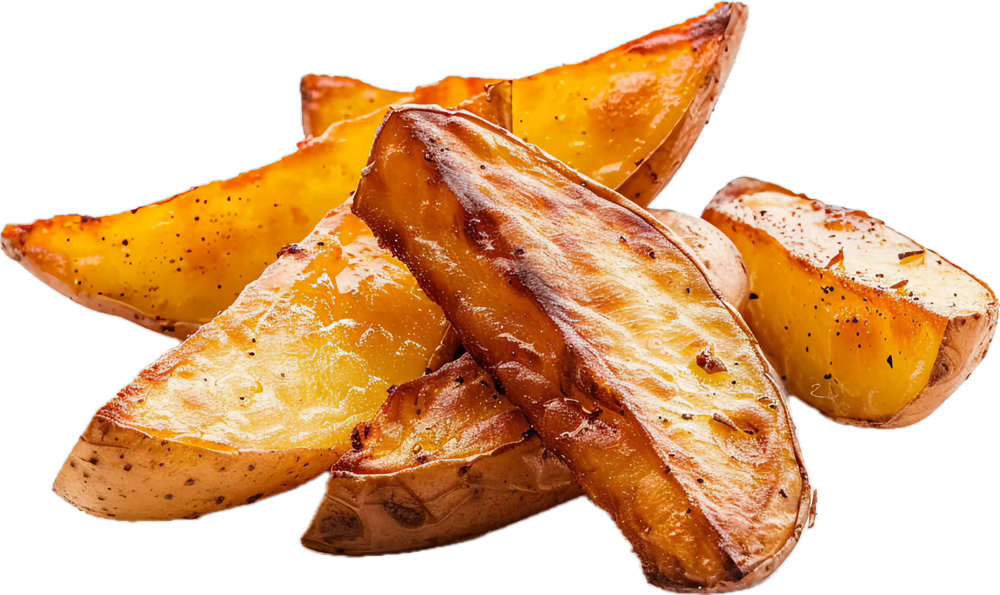
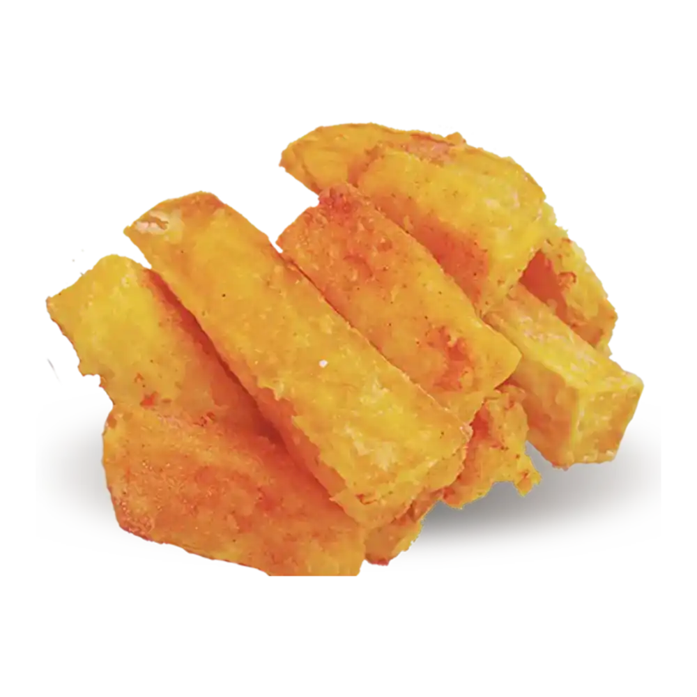
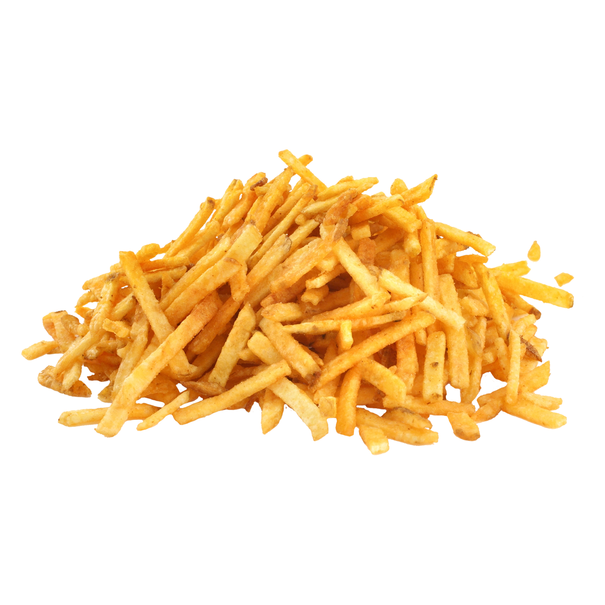
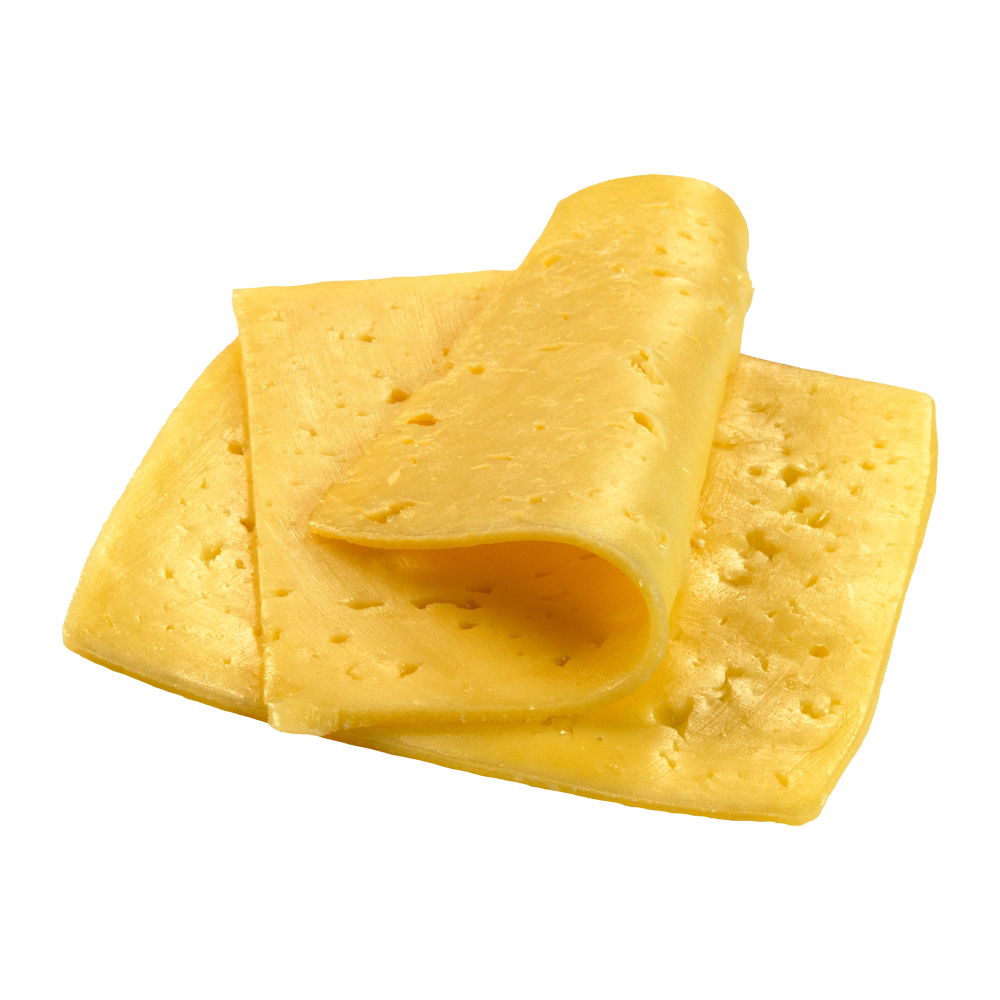
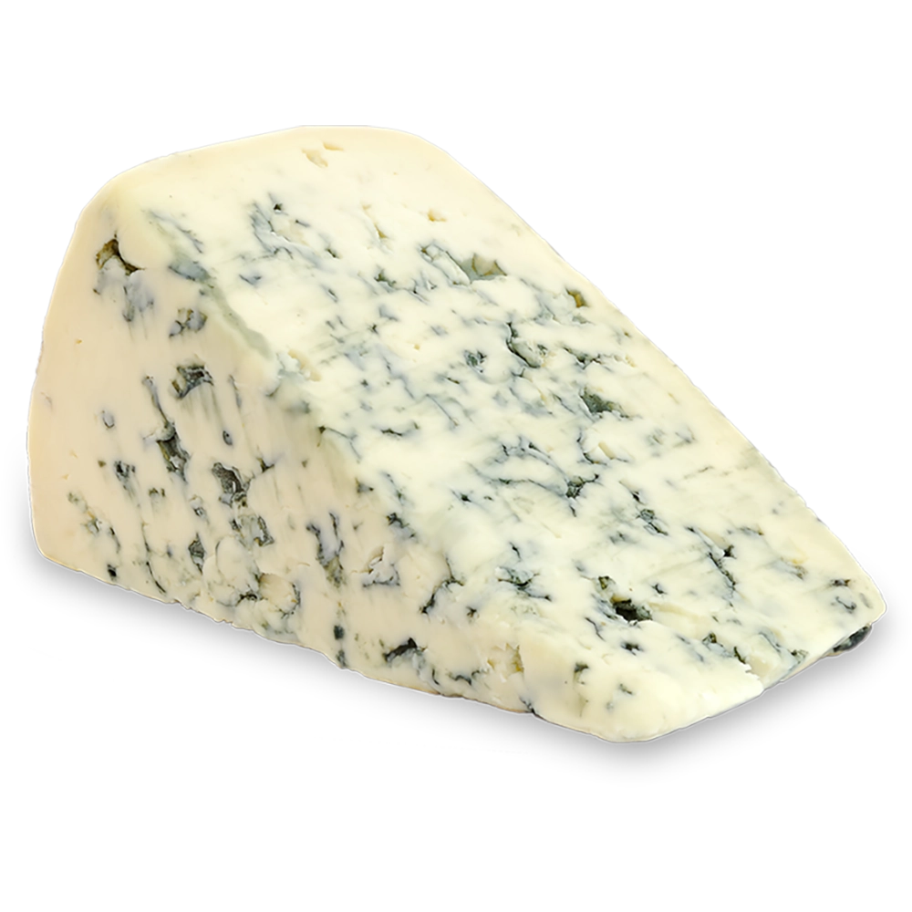
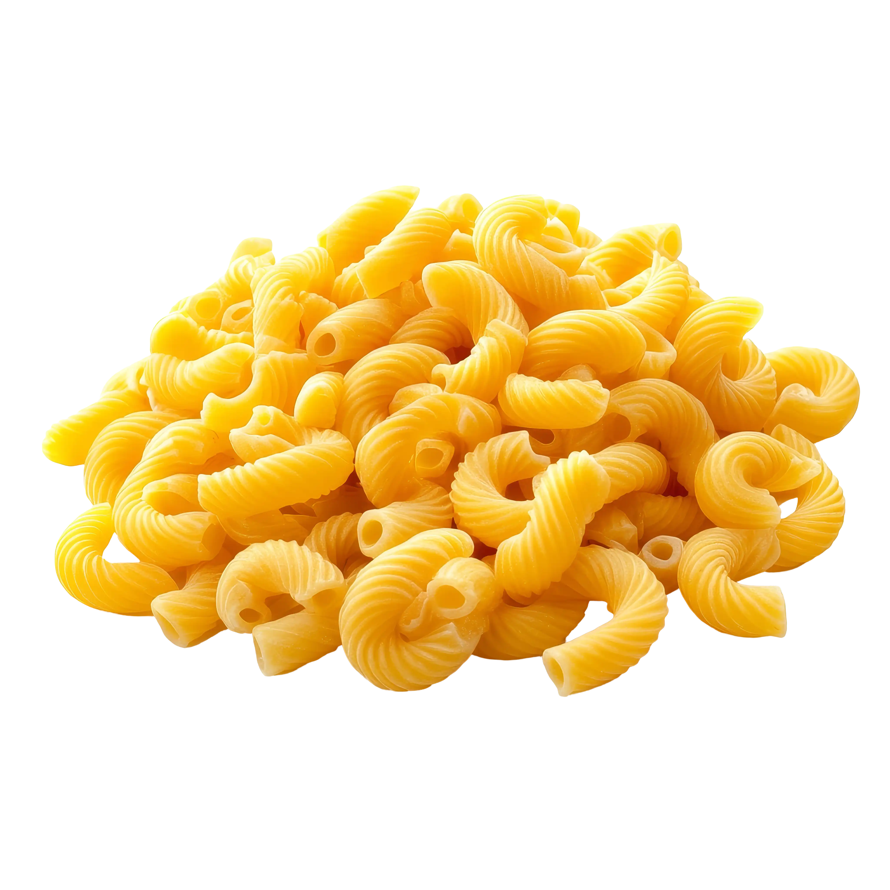

Fries & Sides
Our fries and collection of sides are not only bought by many and hated by all, but are also infamously known for being the worst selection of sides any restaurant has ever offered in the history of food.
Warning: Quinton's Co. is not responsible for any chronic conditions or bodily injuries that may result from consumption of sold food items. Order and consume at high risk with no caution and/or discretion, because we wouldn't make any money if you didn't. For a full list of health concerns, please consult our Corporate Health Policy for more details.

Potato Fries
224 Cal.
Price: $9.49 for small, $14.99 for large
Description: Typical potato fries, except it's the whole potato. Yes, you heard that right. If you want actual french fries you're going to have to cut those suckers yourself. The soil and plant matter is also included to add a bit of extra tang and pungency. If you aren't a fan of unwashed, whole potatoes, then you should try our rotten version (recently discontinued due to health violations).
Ingredients: Potatoes, Car Oil, Soil, Plant Matter, Propionic Acid, Aluminum, Cyanide, Salt, +99 More.

Avacado Fries
272 Cal.
Price: $12.49 for small, $16.99 for large
Description: Typical sweet potato fries, but instead of being made from whole potatoes, they're made from whole avocadoes instead. Not only are they smaller and taste considerably worse, they're also more expensive. Why? We literally have no idea.
Ingredients: Avacadoes, Jet Fuel, Soil, Plant Matter, Phosphoric Acid, Lead, Arsenic, Salt, +99 More.

Pile O' Fries
1274 Cal.
Price: $64.49 for small, $132.99 for large
Description: A giant pile of extremely processed, grease-infused, and definitely not poisonous fries that will make you beg on the street for cash because you spent your entire life savings on buying extremely questionable yet addictive fries. Doesn't come with a container because containers are expensive. Instead, we just dump a random amount of fries on your table while you have to catch the ones that fall on the floor. And no, we don't ever mop the floors. You better get the five-second rule on speed-dial, because trust us, you're going to need it for this one.
Ingredients: Potatoes, Lawnmower Oil, Sodium Stearoyl Lactylate, Liquid Nitrogen, Aluminum, Domoic Acid, Methamphetamine, Unboiled Sea Salt, +99 More.

Cheese Slice
167 Cal.
Price: $7.49 each
Description: One entire slice of perfectly edible cheese. That’s it, a single slice of exceptionally smelly yellow cheese. Comes in three flavors: slightly spoiled, mostly moldy, and really rotten. The one you’re served is decided by one of our teenage interns spinning a carnival wheel in the back kitchen and whatever the arrow lands on is the flavor the next customer gets. Or you could just pay an extra $24.99 and get to choose the amount of mold you want on your cheese, your funeral.
Ingredients: Cheese-Product: Bleached Chicken Milk, Soured Horse Milk, Ammonium Sulfate, Lactose; Xanthan Gum, Magnesium Silicate, +9 More.

Cheese Chunk
238 Cal.
Price: $13.59 each
Description: One large chunk of perfectly spoiled cheese that may or may not have been derived from questionable dairy-based sources. As long as it tastes good, which in total incomplete unhonesty: it doesn't; why does it matter how we made it? Just don't mind the mold spots. It's just a minor byproduct of the totally not questionable sources the cheese is made from. What? Don't look at us, it's your own prerogative sport. Cheese is just fancy looking mold, after all.
Ingredients: Cheese-Product: Moldy Donkey Milk, Rotten Crow Milk, Spoiled Chicken Milk, Vaseline, Calcium Propionate, Acetone, +9 More.

Raw Macaroni
22 Cal.
Price: $4.49 per piece
Description: Macaroni just like your mom used to make, except it's completely raw and there's no cheese. It's just soaked in slightly green and potentially polluted water for five minutes and then dumped on your plate like all good pasta should be. No, we didn't even bother salting it. The serving size is also one piece.
Ingredients: Macaroni Noodles, Untreated Sewage Water, Sorbic Acid, Dandelions, Annatto, Beeswax, Argon, Lactose, +9 More.

Whole Lemons
126 Cal.
Price: $6.99 unsliced, $45.49 sliced
Description: Lemons, but it's literally just a whole lemon. That's it. Plant matter and all. Even comes with the soil it was grown in. Also comes with a sliced option, although you're gonna have to pay up for that premium slicing action. Teaching unskilled and unpaid teenage interns to slice lemons is a very costly pastime, in case you weren't aware.
Ingredients: Swampgrown Lemons, Unorganic Plant Matter, Soured Rat Manure, Untreated Sewage Water, +9 More.